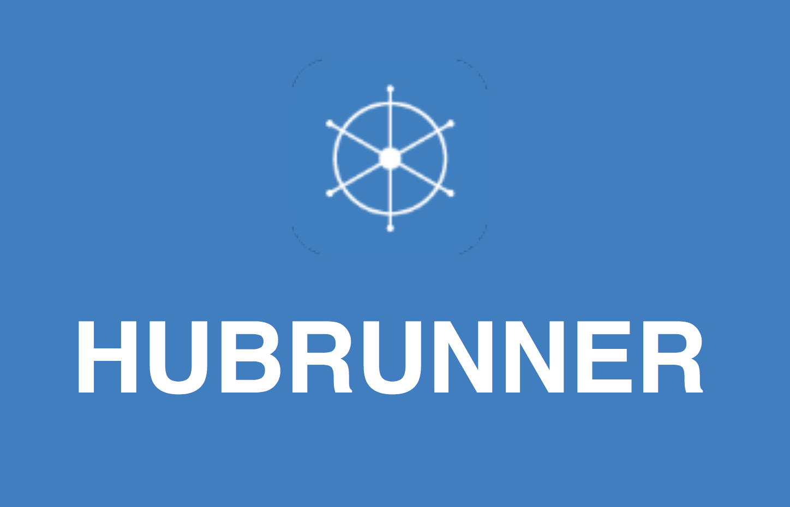
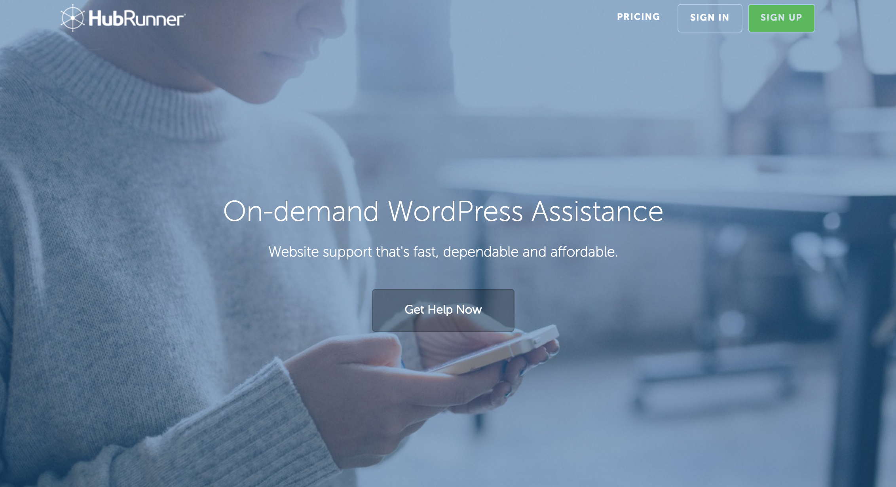

Web + Experience Design
|| USER CENTERED ||

Our challege in this project was to help a small team with no UX support establish a positive experience from not only customers, but freelance agents who provide Wordpress support.
The scope of this project was 3 weeks, so we split the duties where I evaluated the user-side UX, and my teammate did the agent-side UX
Because we were aware that there are many other services that offer wordpress support, we wanted to research the competitors to find out what worked (and didn't work) for them. With a lot of freelancers out there, we had to find the key values in Hubrunner's services. We found Hubrunner's paystructure of pay-per-minute was unique but we found that the pricing model wasn't communicated well leaving users confused and skeptical. Also, communicating how "cheap" the services were left potential agents wary that they weren't going to make what they are worth.
Hubrunner gave us clients we could reach out to and talk to to find out about their experience using the service. The user's stories gave us invaluable insight on what problems took priority in fixing. Finding the pain points in the short user flow was important, but understanding what was already working and what to leave alone was equallyimportant.
In parallel to remote surveys and testing, we brought new users through the process and asked open-ended question about their experience at every point of the process. We found severl things about the initial sign up and ticket creation that could be improved including the lack of price transparency and being able to get through the entire process without seeing or agreeing to the terms of service. "What am I getting?" "I'm not sure what this does" were echoed often amongst new user testers and we wanted to make sure we fixed this.
A few of the problems we encountered in user testing were simple fixes. We had the navigation bar give more information about the product, fixed spacing problems and information that was repeated too many times throughout the site
We created user journey maps to present to the client to show them what the user was feeling at each step in the process.
From our research and testing we created what we felt were the most important sections to have on the main homepage. We played a sorting game and had users put the content in the order they felt was the most useful.
We incorporated the new userflow in rough prototypes and put them to the test.
Here we took the design and put it through the prototyping program Invision. The flow starts from a customer sign up and brings them through connecting their site and creating a request. A demo can be seen here
We presented our work to the client and they were very excited. We helped them brainstorm many ways to improve the onboarding process for their clients and their interaction with agent freelancers. We were asked by them to dig deeper and help them come up with a pricing model that's sustainable to them, agents without alienating their current clientele
A full keynote presentation can be found here

Hubrunner.com after launch with select design reccomendation 